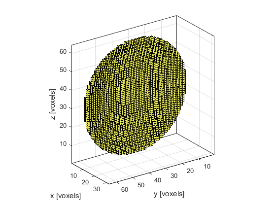
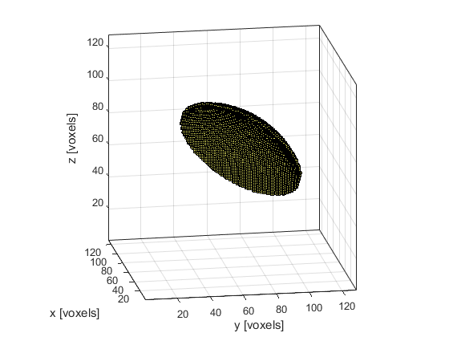

makeBowl
Create a binary map of a bowl within a 3D grid.
Syntax
bowl = makeBowl(grid_size, bowl_pos, radius, diameter, focus_pos) bowl = makeBowl(grid_size, bowl_pos, radius, diameter, focus_pos, ...)
Description
makeBowl creates a binary map of a bowl from a symmetric spherical shell within a three-dimensional grid. The bowl position is denoted by 1's in the matrix with 0's elsewhere. The bowl surface within the Cartesian grid is found using a bi-directional line search along each row and column to find the grid point with radius closest to the desired radius.
The position of the bowl is set by bowl_pos, which corresponds to the center of the rear bowl surface. The orientation of the bowl is set by focus_pos, which corresponds to any point on the axis of the bowl (note, this must not be equal to bowl_pos). It is assumed that the solid angle of the bowl is equal to or less than 2*pi steradians. If the radius is set to inf, a disc is generated.
In some cases, the generated bowl will not be simply connected, and there will be a small number of overlapping grid points. To remove these points, set the optional input 'RemoveOverlap' to true.
Examples
% define parameters grid_size = [32, 64, 64]; bowl_pos = [1, 32, 32]; radius = 60; diameter = 61; focus_pos = [32, 32, 32]; % create bowl makeBowl(grid_size, bowl_pos, radius, diameter, focus_pos, 'Plot', true);
% define parameters grid_size = [128, 128, 128]; bowl_pos = [80, 80, 80]; radius = 60; diameter = 81; focus_pos = [1, 1, 1]; % create bowl makeBowl(grid_size, bowl_pos, radius, diameter, focus_pos, 'Plot', true);
Inputs
grid_size |
size of the 3D grid given as a three element vector [Nx, Ny, Nz] [grid points] |
bowl_pos |
centre of the rear surface of the bowl given as a three element vector [bx, by, bz] [grid points] |
radius |
radius of curvature of the bowl [grid points] |
diameter |
aperture diameter of the bowl [grid points] |
focus_pos |
any point on the beam axis of the bowl given as a three element vector [fx, fy, fz] [grid points] |
Optional Inputs
Optional 'string', value pairs that may be used to modify the default computational settings.
| Input | Valid Settings | Default | Description |
|---|---|---|---|
'Binary' |
(Boolean scalar) | false |
Boolean controlling whether the bowl map is returned as a double precision matrix (false) or a logical matrix (true). |
'Plot' |
(Boolean scalar) | false |
Boolean controlling whether the bowl is plotted using voxelPlot. |
'RemoveOverlap' |
(Boolean scalar) | false |
Boolean controlling whether overlapped grid points are removed. |
Outputs
bowl |
3D binary map of a bowl |
See Also
makeArc, makeBall, makeCartBowl, makeMultiBowl, makeSphere, makeSphericalSection